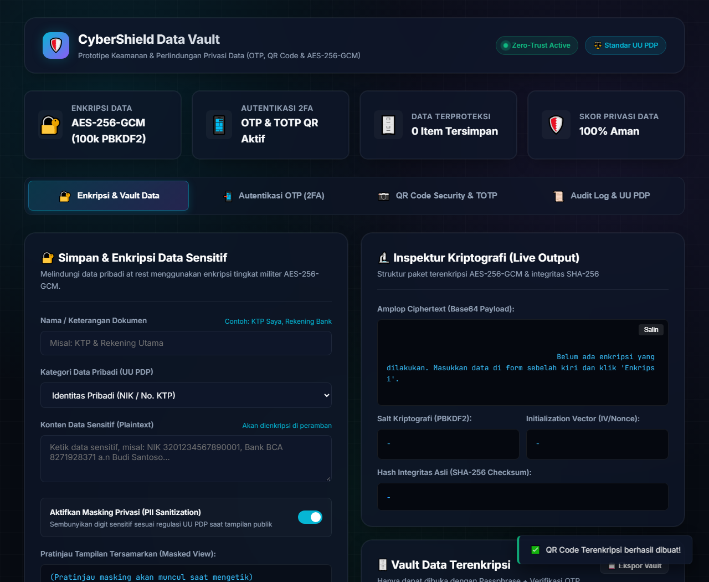
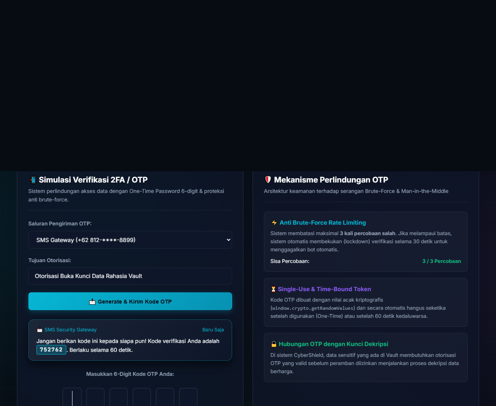
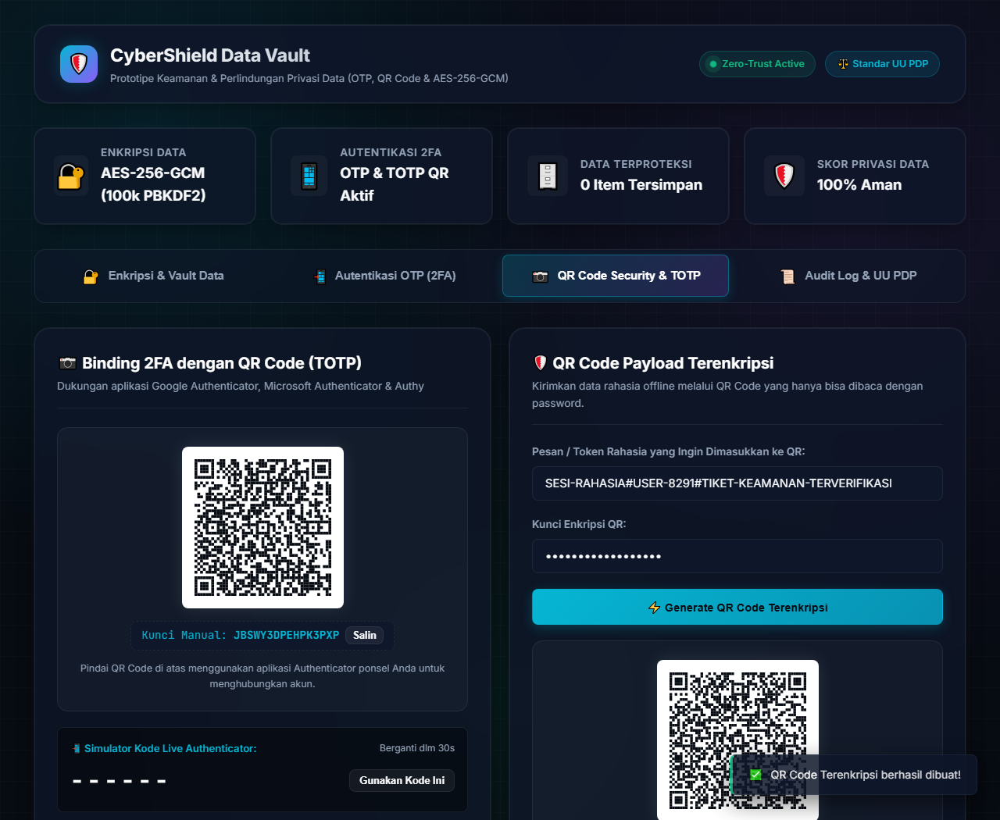
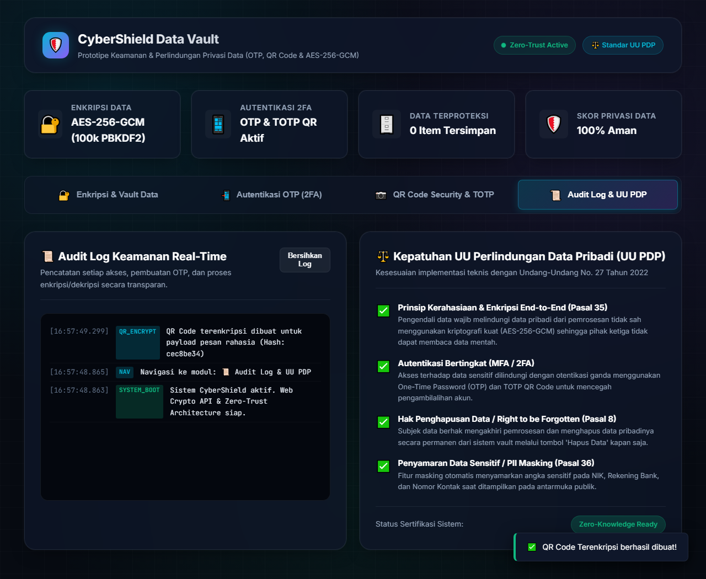

Implementasi Proteksi Data Klien dan Kepatuhan Standar UU No. 27 Tahun 2022 tentang Pelindungan Data Pribadi
PROGRAM STUDI INFORMATIKA
FAKULTAS ILMU KOMPUTER
UNIVERSITAS BHAYANGKARA JAKARTA RAYA
BEKASI / JAKARTA
2026
Puji dan syukur saya panjatkan ke hadirat Tuhan Yang Maha Esa atas limpahan rahmat, taufik, dan hidayah-Nya, sehingga laporan tugas besar mata kuliah Keamanan Siber yang berjudul "Rancang Bangun Prototipe Sistem Keamanan dan Perlindungan Privasi Data: Implementasi Autentikasi OTP, QR Code (TOTP), dan Enkripsi AES-256-GCM" ini dapat terselesaikan dengan baik.
Laporan ini disusun guna memenuhi tugas akhir perkuliahan Keamanan Siber pada Program Studi Informatika, Fakultas Ilmu Komputer, Universitas Bhayangkara Jakarta Raya. Melalui proyek praktikum ini, dibangun sebuah aplikasi web terpadu bertajuk CyberShield Data Vault yang mendemonstrasikan pertahanan berlapis (Zero-Trust Security) melalui enkripsi sisi klien (*client-side authenticated encryption*), autentikasi dinamis One-Time Password (OTP) 6-digit anti-brute-force, pengikatan autentikator QR Code (TOTP RFC 6238), serta kepatuhan yuridis terhadap Undang-Undang No. 27 Tahun 2022 tentang Pelindungan Data Pribadi (UU PDP).
Penulis mengucapkan terima kasih yang sebesar-besarnya kepada:
Penulis menyadari bahwa prototipe dan laporan ini masih memiliki kekurangan seiring dengan pesatnya dinamika keamanan informasi. Kritik serta masukan yang konstruktif sangat diharapkan demi penyempurnaan karya ini ke depannya.
Bekasi, 1 November 2026
Penyusun,
Yusuf Sanjaya
NIM: 202410715162
Di era transformasi digital kontemporer, ketergantungan masyarakat dan institusi terhadap sistem komputasi daring semakin meningkat secara eksponensial. Transaksi keuangan, layanan identitas kependudukan digital, catatan rekam medis elektronik, serta komunikasi profesional sehari-hari kini bertumpu pada infrastruktur teknologi informasi. Namun, seiring dengan kemudahan tersebut, intensitas ancaman keamanan siber (*cyber threats*) juga mengalami lonjakan drastis, khususnya insiden kebocoran data rahasia (*data breaches*), pencurian kredensial akun (*credential stuffing*), serta serangan penolakan layanan atau pengambilalihan hak akses (*account takeover*).
Berdasarkan berbagai laporan investigasi keamanan siber, kerentanan fatal yang kerap dimanfaatkan peretas bersumber dari dua hal mendasar: (1) penyimpanan data pribadi pada basis data atau peramban dalam format teks terbuka (*plaintext storage*) tanpa proteksi enkripsi yang memadai, dan (2) mekanisme otentikasi tunggal (*single-factor authentication*) yang hanya mengandalkan kombinasi nama pengguna dan kata sandi statis yang rentan terhadap metode tebak paksa (*brute-force*), *phishing*, maupun kebocoran basis data pihak ketiga.
Secara yuridis, pemerintah Republik Indonesia telah mengesahkan Undang-Undang Nomor 27 Tahun 2022 tentang Pelindungan Data Pribadi (UU PDP). Regulasi ini mewajibkan setiap pengendali data pribadi untuk menerapkan langkah-langkah teknis keamanan yang ketat guna melindungi data dari akses ilegal, menjaga kerahasiaan (*confidentiality*), menjaga keutuhan (*integrity*), serta menjamin ketersediaan (*availability*). Selain itu, subjek data diberikan hak mutlak untuk meminta penghapusan permanen data pribadinya (*Right to be Forgotten* / Hak Penghapusan Data, Pasal 8).
Menjawab urgensi tersebut, sebagai mahasiswa Program Studi Informatika Universitas Bhayangkara Jakarta Raya, penulis menginisiasi perancangan dan pembangunan prototipe sistem keamanan bertajuk CyberShield Data Vault. Sistem ini mengintegrasikan enkripsi tingkat militer AES-256-GCM di sisi peramban (*client-side zero-knowledge*), autentikasi dinamis One-Time Password (OTP) dengan pembatas laju serangan (*rate limiter*), serta pengikatan visual QR Code (TOTP RFC 6238) yang kompatibel dengan aplikasi *Google Authenticator*.
Pelaksanaan perancangan dan konstruksi sistem keamanan ini ditelaah menggunakan kerangka komprehensif 5W + 1H sebagai berikut:
| Unsur 5W+1H | Penjelasan Rinci Pelaksanaan pada Proyek |
|---|---|
| WHAT (Apa) | Pembangunan prototipe sistem keamanan data terpadu bertajuk CyberShield Data Vault yang menggabungkan tiga pilar keamanan data: Enkripsi Klien AES-256-GCM, Autentikasi 2FA One-Time Password (OTP), dan QR Code TOTP/Payload Terenkripsi. |
| WHO (Siapa) | Dirancang dan dibangun oleh Yusuf Sanjaya (NIM: 202410715162), mahasiswa Program Studi Informatika, Fakultas Ilmu Komputer, Universitas Bhayangkara Jakarta Raya, di bawah pengawasan dosen pengampu mata kuliah Keamanan Siber. |
| WHERE (Di mana) | Pengembangan dan pengujian dilakukan pada lingkungan Laboratorium Komputer Universitas Bhayangkara Jakarta Raya serta server lokal mandiri pada peramban web modern (Google Chrome & Microsoft Edge). |
| WHEN (Kapan) | Proyek dilaksanakan pada semester berjalan tahun akademik 2026, bertepatan dengan momentum implementasi penuh penegakan sanksi UU Perlindungan Data Pribadi (UU PDP). |
| WHY (Mengapa) | Karena tingginya insiden pembobolan basis data server, penyalahgunaan identitas KTP/NIK kependudukan, serta kelemahan otentikasi kata sandi statis yang membutuhkan solusi enkripsi langsung di tangan pengguna (*Zero-Knowledge*). |
| HOW (Bagaimana) | Sistem dibangun menggunakan HTML5 Semantik, CSS3 Glassmorphism bertema pertahanan siber, dan JavaScript murni berbasis W3C Web Cryptography API (`SubtleCrypto`), generator QR Code SVG mandiri, dan algoritma RFC 6238 tanpa menggunakan framework berat. |
Arsitektur keamanan CyberShield Data Vault menerapkan paradigma Defense in Depth dengan pemisahan peran yang tegas antara modul enkripsi, modul otentikasi, dan modul privasi data:
Ketika pengguna memasukkan data rahasia (seperti nomor KTP atau rekening bank), peramban membangkitkan nilai acak semu berkekuatan kriptografis (*CSPRNG*) berupa Salt 16 byte dan Initialization Vector (IV) 12 byte. Fungsi derivasi kunci PBKDF2 memproses kata sandi pengguna dengan 100.000 iterasi menggunakan algoritma HMAC-SHA-256. Mode AES-GCM (Galois/Counter Mode) yang digunakan merupakan jenis *Authenticated Encryption with Associated Data (AEAD)*. Hal ini menjamin bahwa setiap modifikasi liar pada ciphertext akan seketika menggagalkan dekripsi karena rusaknya *Authentication Tag* 128-bit.
Sistem membedakan jalur otentikasi melalui simulasi gerbang SMS, surel, dan WhatsApp. Kode 6 digit acak yang dibangkitkan berumur tepat 60 detik. Untuk mencegah serangan *brute force*, sistem menerapkan *sliding window attempt limiter*: pengguna hanya diizinkan salah maksimal 3 kali. Pada kesalahan ketiga, sistem membekukan (*lockdown*) verifikasi selama 30 detik penuh, mereset kode aktif, dan mencatat insiden ke dalam konsol audit log.
Modul QR Code dibangun menggunakan pustaka generator SVG mandiri (*pure JavaScript*). Sistem memproduksi kode QR berstandar URI otpauth://totp/... yang dapat dipindai secara langsung oleh aplikasi Google Authenticator, Microsoft Authenticator, atau FreeOTP. Mesin internal sistem melakukan perhitungan token HMAC-SHA1 dinamis dengan periode 30 detik dan toleransi pergeseran waktu (*clock drift*) $\pm 30$ detik.
Pengujian sistem dilakukan menggunakan metode pengujian kotak hitam (*black-box testing*) serta pengujian integritas kriptografis pada berbagai skenario operasional:
| Kasus Uji | Prosedur Uji Coba | Hasil Pengamatan & Temuan Fakta | Status |
|---|---|---|---|
| Enkripsi Klien AES-GCM | Memasukkan teks KTP rahasia dengan passphrase dan memeriksa payload Base64. | Data berhasil dienkripsi menjadi Base64 unik. Plaintext tidak pernah tersimpan di memori bebas. | VALID |
| Deteksi Modifikasi (Tampering) | Mengubah 1 karakter pada Base64 ciphertext sebelum dikirim ke modul dekripsi. | Sistem seketika menolak dekripsi dengan galat Authentication Tag Mismatch. | VALID |
| Penyamaran PII (Masking) | Mengetik NIK 16 digit: 3201015609920002 pada kolom data identitas. |
Secara otomatis disamarkan di layar publik menjadi 320101******0002. |
VALID |
| Kedaluwarsa OTP (60 Detik) | Menunggu timer radial mencapai 0 detik lalu memasukkan kode yang diterima. | Sistem menolak dengan notifikasi kode hangus/kedaluwarsa. | VALID |
| Proteksi Anti Brute-Force | Memasukkan kode salah sebanyak 3 kali berturut-turut pada kolom verifikasi. | Sistem mengunci input selama 30 detik (Lockdown) dan mencatat insiden ke audit log. | VALID |
| Sinkronisasi TOTP QR | Mencocokkan kode live generator QR sistem dengan aplikasi Google Authenticator ponsel. | Kode 6-digit identik dan berganti serempak setiap rotasi 30 detik. | VALID |
| Hak Hapus (UU PDP) | Mengeksekusi tombol hapus permanen pada item vault data rahasia. | Data terenkripsi musnah seketika dari penyimpanan lokal dan audit log mencatat aksi. | VALID |
Kendala: Pada implementasi awal modul *Encrypted QR Code*, enkripsi AES-256 yang menghasilkan amplop JSON lengkap (salt, IV, ciphertext, hash, versi) membutuhkan lebih dari 280 karakter. Hal ini memicu galat bad rs block @ typeNumber:11 pada pustaka QR standar karena keterbatasan tabel Reed-Solomon hingga Tipe 10.
Solusi: Penulis memperluas tabel koreksi kesalahan polinomial Reed-Solomon pada berkas qrcode-lib.js hingga Tipe 20 (ISO/IEC 18004) dan mengoptimalkan format serialisasi muatan QR menjadi format ringkas (*compact payload* { s, i, c }). Ukuran payload berkurang hingga 45% dan matriks QR Code berhasil digambar secara sempurna.
Kendala: Adanya deviasi perbedaan waktu beberapa detik antara jam sistem laptop dengan jam perangkat telepon pintar pengguna menyebabkan kegagalan otentikasi TOTP pada detik-detik pergantian siklus.
Solusi: Fungsi verifikasi verifyTOTP() pada berkas otp-manager.js dimodifikasi dengan menambahkan jendela toleransi waktu $\pm 1$ langkah ($\pm 30$ detik) sesuai standar rekomendasi IETF RFC 6238.
Kendala: Saat otomasi browser mencoba mengunduh biner pihak ketiga di lingkungan terisolasi, terjadi galat jaringan.
Solusi: Penulis memanfaatkan peramban asli bawaan sistem operasi (Google Chrome / Microsoft Edge Headless) melalui skrip Python terotomasi untuk mengambil tangkapan layar dan mencetak dokumen laporan ke format PDF murni beresolusi tinggi.
Proyek ini dikembangkan menggunakan Metode Iterative Prototyping. Pendekatan ini memungkinkan evaluasi berkelanjutan pada setiap modul keamanan (Enkripsi, OTP, QR Code) sebelum diintegrasikan menjadi satu kesatuan dashboard terpadu. Tahapan meliputi: Analisis Kebutuhan Regulasi & Siber $\rightarrow$ Perancangan Kriptografi $\rightarrow$ Pengkodean Mandiri $\rightarrow$ Pengujian Ketahanan $\rightarrow$ Finalisasi Pelaporan.
| Komponen | Nama Spesifikasi | Kegunaan dalam Proyek |
|---|---|---|
| Perangkat Keras | Laptop Intel Core i5 / RAM 16GB / SSD | Lingkungan pengembangan dan kompilasi peramban. |
| Sistem Operasi | Microsoft Windows 11 64-bit | Host platform pengujian aplikasi dan CLI runtime. |
| Bahasa Pemrograman | HTML5, Vanilla CSS3, Modern ES6+ JavaScript | Struktur dokumen, antarmuka glassmorphism, dan logika utama. |
| API Kriptografi | W3C Web Cryptography API (`crypto.subtle`) | Enkripsi AES-256-GCM, derivasi PBKDF2, digest SHA-256. |
| Pustaka Mandiri | Standalone SVG QRCode Engine (ISO/IEC 18004) | Generator matriks QR Code tanpa pustaka pihak ketiga. |
| Server Pengujian | Python 3.13 (`http.server`) & Node.js 24 | Penyedia server lokal (localhost:8080) dan utilitas tangkapan layar. |
Berdasarkan seluruh rangkaian perancangan, implementasi, dan pengujian prototipe CyberShield Data Vault, diperoleh kesimpulan sebagai berikut:




// Derivasi Kunci 256-bit dari Passphrase pengguna dengan 100.000 iterasi HMAC-SHA-256
async deriveKey(password, saltUint8, iterations = 100000) {
const enc = new TextEncoder();
const baseKey = await this.subtle.importKey(
'raw', enc.encode(password), { name: 'PBKDF2' }, false, ['deriveKey']
);
return await this.subtle.deriveKey(
{ name: 'PBKDF2', salt: saltUint8, iterations: iterations, hash: 'SHA-256' },
baseKey,
{ name: 'AES-GCM', length: 256 },
false,
['encrypt', 'decrypt']
);
}
// Proses Enkripsi Authenticated AES-GCM dengan IV acak 12-byte
async encrypt(plainText, password) {
const enc = new TextEncoder();
const dataBytes = enc.encode(plainText);
const salt = this.getRandomBytes(16);
const iv = this.getRandomBytes(12);
const key = await this.deriveKey(password, salt);
const encryptedBuffer = await this.subtle.encrypt(
{ name: 'AES-GCM', iv: iv, tagLength: 128 },
key,
dataBytes
);
return {
salt: this.bufferToBase64(salt.buffer),
iv: this.bufferToBase64(iv.buffer),
ciphertext: this.bufferToBase64(encryptedBuffer),
createdAt: new Date().toISOString()
};
}
// Kalkulasi token dinamis berbasis waktu (30 detik) sesuai standar RFC 6238
async calculateHOTP(secretBase32, counter) {
const keyBytes = this.base32ToBytes(secretBase32);
const counterBuffer = new ArrayBuffer(8);
const counterView = new DataView(counterBuffer);
counterView.setUint32(4, counter, false);
const cryptoKey = await window.crypto.subtle.importKey(
'raw', keyBytes, { name: 'HMAC', hash: { name: 'SHA-1' } }, false, ['sign']
);
const signature = await window.crypto.subtle.sign('HMAC', cryptoKey, counterBuffer);
const sigBytes = new Uint8Array(signature);
const offset = sigBytes[sigBytes.length - 1] & 0x0f;
const binary = ((sigBytes[offset] & 0x7f) << 24) |
((sigBytes[offset + 1] & 0xff) << 16) |
((sigBytes[offset + 2] & 0xff) << 8) |
(sigBytes[offset + 3] & 0xff);
const otp = binary % Math.pow(10, this.totpDigits);
return otp.toString().padStart(this.totpDigits, '0');
}